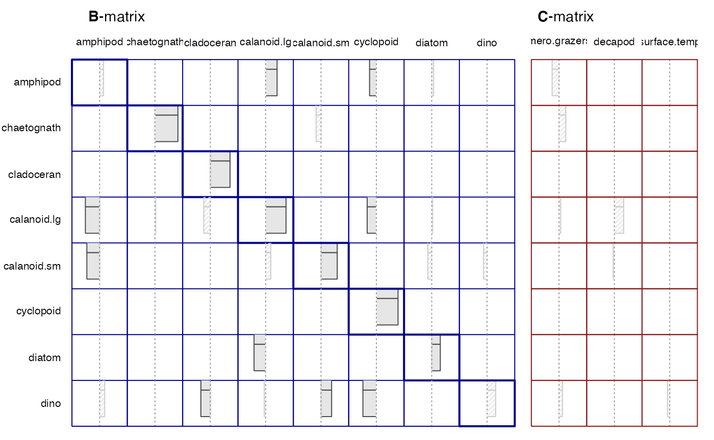
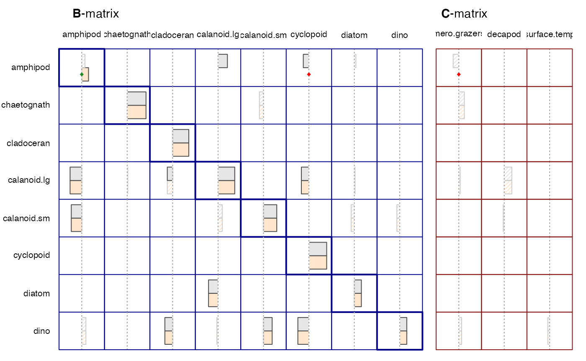
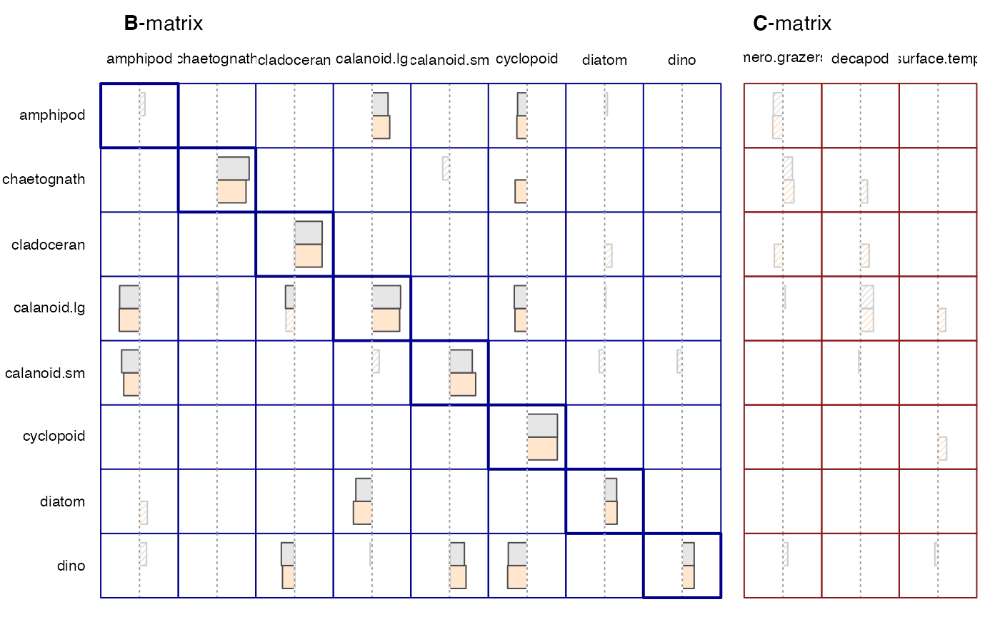

Getting_Started.Rmd
library(MAR1)
#> Loading required package: leaps
#> Loading required package: bestglm
#> Loading required package: tcltkThese examples take 1-2 minutes to run
This uses the [run.mar()] arguments to set variables and restrictions.
data(L4.mar)
colnames(L4.mar)
#> [1] "contin" "date" "cnidarian" "amphipod" "chaetognath"
#> [6] "krill" "pteropod" "tunicate" "cladoceran" "calanoid.lg"
#> [11] "calanoid.sm" "cyclopoid" "poecilostom" "harpact" "diatom"
#> [16] "dino" "other.algae" "cirripedia" "mero.grazers" "decapod"
#> [21] "surface.temp"Select response (1) and covariates (2) for the model. The variables and covariates are specified with a vector that is the same length as the number of columns. 0s are not uses. 1s are response columns and 2s are covariate columns.
myvar<-c(0,0,0,1,1,0,0,0,1,1,1,1,0,0,1,1,0,0,2,2,2) The next step is to set any B and D to 0 that will be fixed at 0. The shape of the restriction matrix has rows equal to the number of response variables” and columns equal to number of response variables plus the number of covariates. In this example, we thus have a \(8 \times 11\) matrix.
Next we fit the MAR model:
run1<-run.mar(L4.mar, variables=myvar, restrictions=myres, search="exhaustive")
#>
#>
#> searching for best-fit model...
#> ...BEST-FIT MODEL SELECTED
#> ( search time: 0 minutes 0.4 seconds )
#>
#>
#>
#> identifying 10 lowest AIC models...
#> ...TOP MODELS RETAINED
#>
#>
#>
#> bootstrapping best-fit model...
#> ...BOOTSTRAPPING COMPLETE
#>
#>
#> ════════════════════════════════════════════════════════════════════════════════
#>
#> Summary
run1
#>
#> Variables Selected:
#> contin date cnidarian amphipod chaetognath krill
#> 0 0 0 1 1 0
#> pteropod tunicate cladoceran calanoid.lg calanoid.sm cyclopoid
#> 0 0 1 1 1 1
#> poecilostom harpact diatom dino other.algae cirripedia
#> 0 0 1 1 0 0
#> mero.grazers decapod surface.temp
#> 2 2 2
#> [0 = not included, 1 = variate, 2 = covariate]
#>
#> Restrictions Set:
#> amphip chaeto cladoc calano calano cyclop diatom dino mero.g
#> amphipod · · · · · · · · ·
#> chaetognath · · · · · · · · ·
#> cladoceran · · · · · · · · ·
#> calanoid.lg · · · · · · · · ·
#> calanoid.sm · · · · · · · · ·
#> cyclopoid · · · · · · · · ·
#> diatom · · · · · · · · ·
#> dino · · · · · · · · ·
#> decapo surfac
#> amphipod · ·
#> chaetognath · ·
#> cladoceran · ·
#> calanoid.lg · ·
#> calanoid.sm · ·
#> cyclopoid · ·
#> diatom · ·
#> dino · ·
#>
#> Search Type: "exhaustive"
#> ________________________________________
#> ¯¯¯¯¯¯¯¯¯¯¯¯¯¯¯¯¯¯¯¯¯¯¯¯¯¯¯¯¯¯¯¯¯¯¯¯¯¯¯¯
#> Best-fit Model
#> ¯¯¯¯¯¯¯¯¯¯¯¯¯¯
#> B:
#> │ amphip chaeto cladoc calano calano cyclop diatom dino │
#> amphipod │ 0.08 · · 0.24 · -0.14 0.04 · │
#> chaetognath │ · 0.48 · · -0.10 · · · │
#> cladoceran │ · · 0.42 · · · · · │
#> calanoid.lg │ -0.30 0.02 -0.14 0.43 · -0.19 0.02 · │
#> calanoid.sm │ -0.27 · · 0.11 0.34 · -0.08 -0.07 │
#> cyclopoid │ · · · · · 0.46 · · │
#> diatom │ · · · -0.24 · · 0.18 · │
#> dino │ 0.11 · -0.20 -0.03 0.22 -0.28 · 0.18 │
#> C:
#> mero.g decapo surfac
#> amphipod -0.14 · ·
#> chaetognath 0.14 · ·
#> cladoceran · · ·
#> calanoid.lg 0.04 0.20 ·
#> calanoid.sm · -0.03 ·
#> cyclopoid · · ·
#> diatom · · ·
#> dino 0.07 · -0.05
#>
#> AIC: 3548.162
#>
#> R^2 Values:
#> R2 R2_D
#> amphipod 0.10 0.46
#> chaetognath 0.28 0.28
#> cladoceran 0.18 0.30
#> calanoid.lg 0.27 0.44
#> calanoid.sm 0.22 0.38
#> cyclopoid 0.21 0.27
#> diatom 0.11 0.44
#> dino 0.17 0.43
#> ________________________________________
#> ¯¯¯¯¯¯¯¯¯¯¯¯¯¯¯¯¯¯¯¯¯¯¯¯¯¯¯¯¯¯¯¯¯¯¯¯¯¯¯¯
#> Bootstrapped Model
#> ¯¯¯¯¯¯¯¯¯¯¯¯¯¯¯¯¯¯
#> B:
#> │ amphip chaeto cladoc calano calano cyclop diatom dino │
#> amphipod │ · · · 0.25 · -0.20 · · │
#> chaetognath │ · 0.50 · · · · · · │
#> cladoceran │ · · 0.42 · · · · · │
#> calanoid.lg │ -0.31 · · 0.49 · -0.19 · · │
#> calanoid.sm │ -0.24 · · · 0.39 · · · │
#> cyclopoid │ · · · · · 0.46 · · │
#> diatom │ · · · -0.24 · · 0.18 · │
#> dino │ · · -0.22 · 0.27 -0.33 · · │
#> C:
#> mero.g decapo surfac
#> amphipod · · ·
#> chaetognath · · ·
#> cladoceran · · ·
#> calanoid.lg · · ·
#> calanoid.sm · · ·
#> cyclopoid · · ·
#> diatom · · ·
#> dino · · ·
#>
#> AIC: 3546.282
#>
#> R^2 Values:
#> R2 R2_D
#> amphipod 0.07 0.44
#> chaetognath 0.25 0.25
#> cladoceran 0.18 0.30
#> calanoid.lg 0.22 0.41
#> calanoid.sm 0.20 0.36
#> cyclopoid 0.21 0.27
#> diatom 0.11 0.44
#> dino 0.12 0.40
#>
#> Some summary statistics for the model
summary(run1)
#>
#> Matrix Coefficients:
#>
#> Best-fit Bootstrap
#> ─────────────── ───────────────
#> B C Total B C Total
#> total.coef 64 24 88 64 24 88
#> zeros 37 17 54 49 24 73
#> nonzeros 27 7 34 15 0 15
#> positive 15 4 19 8 0 8
#> negative 12 3 15 7 0 7
#>
#>
#> Information Criteria:
#>
#> Best-fit Bootstrap
#> ───────── ─────────
#> AIC 3548.162 3546.282
#> BIC 3795.015 3733.004
#>
#>
#> R^2 Values:
#>
#> Best-fit Bootstrap
#> ─────────── ───────────
#> R2 R2_D R2 R2_D
#> min 0.1 0.27 0.07 0.25
#> 1st qu 0.15 0.29 0.12 0.29
#> median 0.19 0.4 0.19 0.38
#> mean 0.19 0.37 0.17 0.36
#> 3rd qu 0.24 0.44 0.21 0.41
#> max 0.28 0.46 0.25 0.44
#>
#>
#> Stability:
#>
#> Best-fit Bootstrap
#> ───────── ─────────
#> ATTRIBUTE METRIC VALUE VALUE
#> resilience detB 0.11 0.00
#> resilience maxeigB 0.48 0.50
#> resilience maxeigkrB 0.23 0.25
#> reactivity sigma.over.Vinf -0.82 -0.83
#> reactivity maxeigBxB -0.46 -0.39Plots
plot(run1)
Set some elements of the restriction matrix to 1 to force an element to be included (will never be dropped in searches) and set some to 0 to force that element to always be zero (not in the model).
We will use the same variates as run1 and new
restrictions.
run1b<-run.mar(L4.mar,variables=run1,restrictions=myres,"exhaustive")
#>
#>
#> searching for best-fit model...
#> ...BEST-FIT MODEL SELECTED
#> ( search time: 0 minutes 0.4 seconds )
#>
#>
#>
#> identifying 10 lowest AIC models...
#> ...TOP MODELS RETAINED
#>
#>
#>
#> bootstrapping best-fit model...
#> ...BOOTSTRAPPING COMPLETE
#>
#>
#> ════════════════════════════════════════════════════════════════════════════════
#>
#> Plot results.
plot(run1,run1b)
run1c<-run.mar(L4.mar,variables=run1,restrictions=run1,search="fwdstep")
#>
#>
#> searching for best-fit model...
#> ...BEST-FIT MODEL SELECTED
#> ( search time: 0 minutes 0.02 seconds )
#>
#>
#>
#> bootstrapping best-fit model...
#> ...BOOTSTRAPPING COMPLETE
#>
#>
#> ════════════════════════════════════════════════════════════════════════════════
#>
#> Plot
plot(run1,run1c,legend=TRUE)
#> agg_png
#> 2Alternatively one can not pass in variables and
restrictions, and one can interactively select the
variables and restrictions.
run2<-run.mar(L4.mar,search="exhaustive")